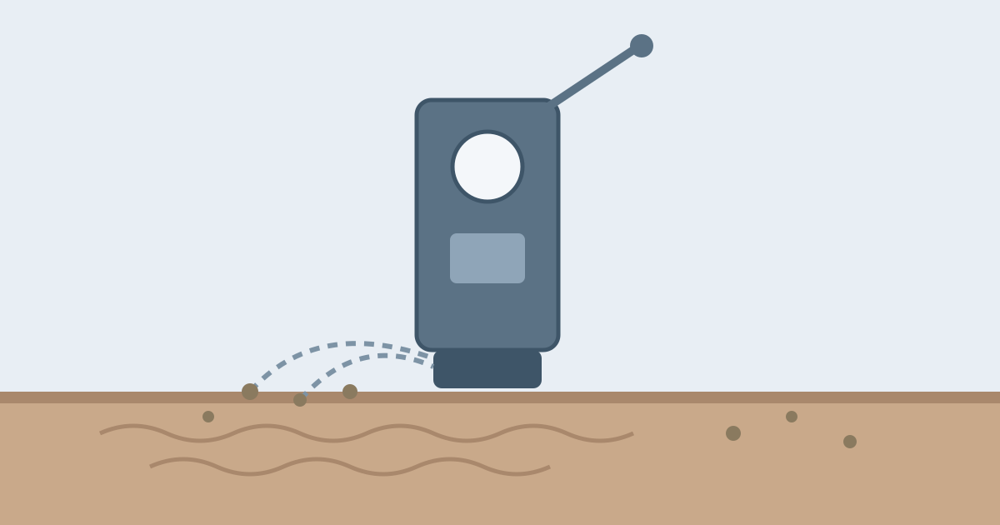

How Does a Vacuum Cleaner Pick Up Dirt?

Push a vacuum cleaner across a carpet and the dust, crumbs, and pet hair simply vanish into it. It looks like magic, but the machine is not grabbing the dirt at all. It is moving air, and the air carries the dirt with it. A vacuum cleaner is really an air pump: it creates a fast stream of air flowing into the machine, and that stream is strong enough to lift loose dirt off the floor and carry it inside.
Three parts do almost all the work: a motor that spins a fan to move the air, brushes that loosen dirt stuck in carpet fibres, and a filter or bag that catches the dirt while letting the clean air escape. Each part is simple on its own, but together they turn a noisy box into one of the most useful machines in the home.
The Motor and the Fan: Where the Suction Comes From
The heart of a vacuum cleaner is an electric motor connected to a fan. When you switch the machine on, the motor spins the fan blades very fast, and the fan pushes air out of the machine. As air leaves, the pressure inside the vacuum drops below the pressure of the air in the room. The air outside, which is at normal pressure, rushes in through the nozzle to fill the gap, and that inrush is what we call suction.
Suction itself is not a force pulling dirt upward. It is the ordinary air pressure of the room pushing air, and the dirt with it, into the low-pressure space inside the cleaner. The faster the fan spins and the better the machine is sealed, the stronger this flow becomes. That is why a vacuum with a blocked hose feels weak: the air cannot flow, so there is nothing to carry the dirt, however loudly the motor runs.
Brushes and Agitation: Lifting Dirt Off the Floor
Airflow alone cannot lift dirt that is pressed deep into carpet fibres, which is why most vacuum cleaners also have a rotating brush, sometimes called a beater bar. The brush spins quickly and its stiff bristles beat and flick the carpet, shaking loose the dust and grit that has settled between the fibres. Once the dirt is floating free, the airflow can pick it up.
On hard floors the brush is usually switched off or raised, because a spinning brush on a bare floor would scatter crumbs instead of collecting them, and it can scratch delicate surfaces. This is why many vacuums have a floor-type setting: carpet mode lowers the brush for agitation, while hard-floor mode relies on airflow alone. Robot vacuums use the same idea on a smaller scale, with side brushes that sweep dirt from edges and corners into the path of the suction inlet.
Filters and Bags: Where the Dirt Goes
Once dirt is inside the machine, it has to stay there while the air flows back out. In a bagged vacuum, the dirty air passes through a paper or fabric bag that acts as a filter: air escapes through the tiny pores of the bag, but dust and hair are too large to pass and stay trapped inside. When the bag fills up, airflow drops and suction weakens, which is why changing the bag restores performance.
Bagless vacuums use a dust container instead, often with a spinning cyclone. The dirty air whirls around inside a cone, and the spinning motion throws the heavier dirt particles outward against the walls, where they fall into the container. A fine filter then catches the smallest dust before the air leaves the machine. Some vacuums add a HEPA filter, a dense mesh that traps very fine particles, which is useful for homes where someone is sensitive to dust.
Why Some Vacuums Lose Suction
A vacuum that once worked well usually loses suction for one of a few simple reasons. The most common is a full bag or dust container: when there is no room left for air to pass, the flow slows to a trickle. A clogged filter has the same effect, which is why washable filters need rinsing and drying from time to time, and disposable ones need replacing.
Blockages are the next usual cause. A sock, a clump of hair, or a build-up of dust can lodge in the hose or the nozzle and choke the airflow. Hair wrapped around the brush roller is another common problem: it stops the brush spinning freely, so the carpet is no longer agitated and the dirt stays put. A cracked hose or a loose seal can also leak air, so the machine pulls air in through the crack instead of through the nozzle, and the cleaning power drops even though the motor sounds fine.
Different Types for Different Jobs
Upright vacuums, the tall machines you push in front of you, are built mainly for carpets: they have a wide brush head and a strong motor, and they cover large areas quickly. Canister vacuums put the motor and dust container in a separate body that follows behind on wheels, with a lighter wand and nozzle in your hand, which makes them easier to use on stairs and under furniture.
Stick vacuums are slim, battery-powered versions that are handy for quick clean-ups but have smaller motors and shorter run times than mains-powered machines. Handheld vacuums are smaller still, useful for cars and small spills. Robot vacuums trade power for convenience: they are weaker than a full-size machine, but they clean a little every day without being asked, which keeps dust from building up in the first place.
Common Misconceptions
One common belief is that a vacuum cleaner sucks dirt up by creating a true vacuum inside. It does not: the pressure inside is only slightly lower than the pressure in the room, and it is the rush of ordinary air filling that small difference that does the work. Another is that more watts always mean better cleaning. Power helps, but a well-designed nozzle, a clean filter, and a freely spinning brush matter just as much, which is why a modest modern vacuum often cleans better than an old powerful one. A third is that vacuuming is bad for carpets. In fact, regular vacuuming protects a carpet, because grit left in the fibres acts like sandpaper and wears them down with every footstep.
Frequently Asked Questions
Why does my vacuum smell bad?
The smell usually comes from the bag or filter, where trapped dust and moisture breed odour. Emptying the container, replacing the bag, and washing or replacing the filter normally fixes it. Damp carpet dust is a common cause.
How often should I vacuum?
High-traffic areas benefit from vacuuming two or three times a week, while rarely used rooms need it less often. Homes with pets usually need more frequent cleaning, because hair and dander settle into carpet quickly.
Do robot vacuums really clean properly?
They clean light, everyday dust well, especially when they run regularly, but they are weaker than a full-size vacuum and can struggle with deep carpet dirt. Most owners use a robot for maintenance and a normal vacuum for a deeper clean now and then.
Conclusion
A vacuum cleaner is a clever use of ordinary air pressure. The motor and fan create a low-pressure space, the air in the room rushes in to fill it, the brush shakes the dirt loose so the airflow can carry it, and the bag or filter keeps the dirt while the clean air escapes. When it stops working well, the cause is almost always something simple: a full bag, a dirty filter, a blocked hose, or a brush tangled with hair. Keep those clear, and the humble rush of air will keep doing its quiet work, one carpet at a time.